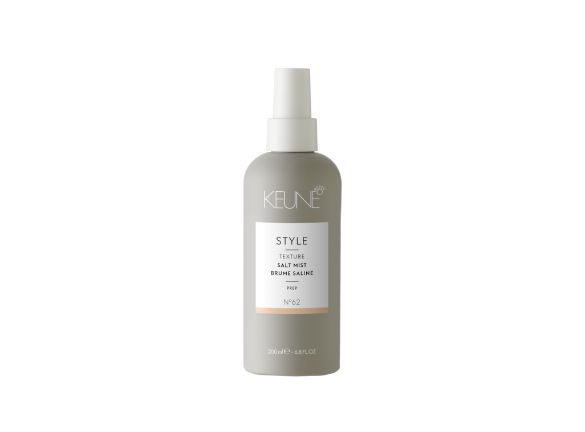

-
Aqua (Water), Sodium Laureth Sulfate, Cocamidopropyl Betaine, Decyl Glucoside, PEG-200 Hydrogenated Glyceryl Palmate, Glycol Distearate, PEG-40 Hydrogenated Castor Oil, Glyceryl Laurate, Sodium Chloride, Cetrimonium Chloride, Sodium Benzoate, Citric Acid, PEG-7 Glyceryl Cocoate, Cocamide MEA, Propylene Glycol, Methoxy PEG/PPG-7/3 Aminopropyl Dimethicone, Polyquaternium-10, Panthenol, Laureth-2, Polyquaternium-7, Parfum (Fragrance), Laureth-10, Cocos Nucifera (Coconut) Oil, Formic Acid, Hydrolyzed Wheat Protein, Passiflora Incarnata (Seed) Oil, Saccharomyces/Magnesium Ferment, Gardenia Tahitensis Flower Extract, Adansonia Digitata (Seed) Oil, Saccharomyces/Iron Ferment, CI 19140 (Yellow 5), Saccharomyces/Zinc Ferment, Tocopherol, Saccharomyces/Copper Ferment, Saccharomyces/Silicon Ferment, CI 14700 (Red 4).
Шампунь «Шелковый уход» — CARE SATIN OIL SHAMPOO KEUNE, 300 мл, 1000 мл (423)
Комплекс Satin Oil линии Care основан на уникальном сочетании набора благородных масел и природных минералов. Комплекс предназначен для тусклых и сухих волос и воздействует на все слои волоса: укрепляет структуру, увлажняет и придает здоровый блеск, а также обеспечивает оптимальный баланс для здоровья кожи головы. Масло моной и масло семян папайи проникают в самую серединку волоса и восстанавливают сухие и повреждённые участки. Сладкое миндальное масло увлажняет верхние слои, расположенные за кутикулой. Масло янгу смягчает, разглаживает и защищает волосяной ствол благодаря натуральным антиоксидантам, Омега 6 и 9, жирным кислотам. Дополнительное питание и оптимальный баланс влажности достигается благодаря природным минералам, входящие во все продукты линии Care.
-

Aqua (Water), Cetearyl Alcohol, Decyl Oleate, Cetrimonium Chloride, Behentrimonium Chloride, Butyrospermum Parkii (Shea) Butter, Polyquaternium-37, Propylene Glycol Dicaprylate/Dicaprate, Sodium Benzoate, Propylene Glycol, Lactic Acid, Silicone Quaternium-22, Oleyl Erucate, Hydrolyzed Wheat Protein, Panthenol, Cocos Nucifera (Coconut) Oil, PPG-3 Myristyl Ether, Isopropyl Alcohol, Parfum (Fragrance), Polyquaternium-10, PPG-1 Trideceth-6, Passiflora Incarnata (Seed) Oil, Gardenia Tahitensis Flower Extract, Saccharomyces/Magnesium Ferment, CI 19140 (Yellow 5), Adansonia Digitata (Seed) Oil, Saccharomyces/Iron Ferment, Tocopherol, CI 14700 (Red 4), Saccharomyces/Zinc Ferment, Saccharomyces/Copper Ferment, Saccharomyces/Silicon Fermen.
Кондиционер «Шелковый уход» CARE SATIN OIL CONDITIONER KEUNE, 250 мл, 1000 мл (424)
Комплекс Satin Oil линии Care основан на уникальном сочетании набора благородных масел и природных минералов. Комплекс предназначен для тусклых и сухих волос и воздействует на все слои волоса: укрепляет структуру, увлажняет и придает здоровый блеск, а также обеспечивает оптимальный баланс для здоровья кожи головы. Масло моной и масло семян папайи проникают в самую серединку волоса и восстанавливают сухие и поврежденные участки. Сладкое миндальное масло увлажняет верхние слои, расположенные за кутикулой. Масло янгу смягчает, разглаживает и защищает волосяной ствол благодаря натуральным антиоксидантам, омега 6 и 9, жирным кислотам. Дополнительное питание и оптимальный баланс влажности достигается благодаря природным минералам, входящие во все продукты линии Care.
-

Aqua (Water), Cetearyl Alcohol, Behentrimonium Chloride, Stearamidopropyl Dimethylamine, Cetyl Esters, Glycerin, Helianthus Annuus Hybrid (Sunflower Seed) Oil, Hydrogenated Castor Oil/Sebacic Acid Copolymer, Quaternium-87, Isopropyl Alcohol, Propylene Glycol, Citric Acid, Candelilla Cera (Euphorbia Cerifera (Candelilla) Wax), Caprylyl Glycol, Panthenol, Sodium Benzoate, Cocos Nucifera (Coconut) Oil, Parfum (Fragrance), Passiflora Incarnata (Seed) Oil, Hydrolyzed Wheat Protein, Gardenia Tahitensis Flower Extract, Saccharomyces/Magnesium Ferment, CI 19140 (Yellow 5), Adansonia Digitata (Seed) Oil, Saccharomyces/Iron Ferment, Tocopherol, CI 14700 (Red 4), Saccharomyces/Zinc Ferment, Saccharomyces/Copper Ferment, Saccharomyces/Silicon Ferment.
Маска Шелковый уход — CARE SATIN OIL MASK KEUNE, 50мл, 200 мл, 500мл (425)
Нидерландский косметический бренд Keune, неизменно заботясь о сохранении красоты и здоровья вашей шевелюры, разработал уникальное средство, обладающее высокой эффективностью в восстановлении и щадящим действием. Care Line Satin Oil Treatment — отличный препарат для сухих волос. Он насыщает их полезными масляными компонентами, которые в нужных пропорциях собраны в инновационной формуле этой маски. Кроме того, она содержит ценные природные минералы. Ваши волосы подпитываются изнутри, делаясь мягкими, гладкими и струящимися, словно жидкий шелк. Маска Шелковый уход отлично подойдет в качестве лечебной для пересушенной и ослабленной шевелюры или же станет дополнением уходовой линейки Care Line Satin Oil для любительниц средств из этой серии.
-

Aqua (Water), Sodium Laureth Sulfate, Disodium Cocoamphodiacetate, Cocamidopropyl Betaine, Sodium Chloride, Sodium Thiosulfate, Hydrolyzed Wheat Protein, Glycol Distearate, Panthenol, PEG-200 Hydrogenated Glyceryl Palmate, PEG-40 Hydrogenated Castor Oil, Parfum (Fragrance), Cocamide MEA, Polyquaternium-10, Diazolidinyl Urea, PEG-7 Glyceryl Cocoate, Tetrasodium EDTA, Citric Acid, Propylene Glycol, Polyquaternium-7, Methylparaben, Laureth-10, Sodium Styrene/Acrylates Copolymer, Glyceryl Laurate, Sodium Cocoyl Hydrolyzed Wheat Protein, Propylparaben, Sodium Benzoate, Formic Acid, Phenoxyethanol, Saccharomyces/Magnesium Ferment, Saccharomyces/Iron Ferment, Saccharomyces/Zinc Ferment, Saccharomyces/Copper Ferment, Saccharomyces/Silicon Ferment, Ethylparaben, Alpha-Isomethyl Ionone, Benzyl Salicylate, Hexyl Cinnamal, Limonene, Linalool.
Шампунь»Экстра защита» от солнца — CARE SUN SHIELD SHAMPOO KEUNE, 300 мл (427)
Защита от солнца сухих, пористых и поврежденных волос. Для мягкого очищения и увлажнения волос и тела. Природные минералы, провитамин В5 и комплекс «Анти-хлор» предотвращают воздействия UV-лучей, удаляют хлор и морскую соль, увлажняя волосы, кожу головы и тело.
-
Aqua (Water), Sodium Laureth Sulfate, Disodium Cocoamphodiacetate, Cocamidopropyl Betaine, Sodium Chloride, Sodium Thiosulfate, Hydrolyzed Wheat Protein, Glycol Distearate, Panthenol, PEG-200 Hydrogenated Glyceryl Palmate, PEG-40 Hydrogenated Castor Oil, Parfum (Fragrance), Cocamide MEA, Polyquaternium-10, Diazolidinyl Urea, PEG-7 Glyceryl Cocoate, Tetrasodium EDTA, Citric Acid, Propylene Glycol, Polyquaternium-7, Methylparaben, Laureth-10, Sodium Styrene/Acrylates Copolymer, Glyceryl Laurate, Sodium Cocoyl Hydrolyzed Wheat Protein, Propylparaben, Sodium Benzoate, Formic Acid, Phenoxyethanol, Saccharomyces/Magnesium Ferment, Saccharomyces/Iron Ferment, Saccharomyces/Zinc Ferment, Saccharomyces/Copper Ferment, Saccharomyces/Silicon Ferment, Ethylparaben, Alpha-Isomethyl Ionone, Benzyl Salicylate, Hexyl Cinnamal, Limonene, Linalool.
Кондиционер «Экстра Защита» — CARE SUN SHIELD CONDITIONER KEUNE, 250 мл
CARE SUN SHIELD CONDITIONER воздействует на сухие и пористые локоны, которые часто подвергаются опасному воздействию солнечных лучей. Масло ши обеспечивает деликатное кондиционирование и оживление волос, насыщает волосяные волокна всеми полезными ингредиентами, а также улучшает общую структуру прядей, позволяя им стать более крепкими и более шелковистыми. Активные УФ-фильтры, проникают глубоко в структуру каждого локона и остаются внутри даже после смывания кондиционера с волос, тем самым обеспечивая сверхнадежную защиту. А инновационные полимеры придают прядям изумительную гладкость и существенно облегчают расчесывание.
-
Alcohol Denat., Dimethicone, Octyldodecanol, Trisiloxane, Ethylhexyl Methoxycinnamate, Aqua (Water), Squalane, Tocopheryl Acetate, Parfum (Fragrance), Propylene Glycol, Diethylamino Hydroxybenzoyl Hexyl Benzoate, Glycerin, Butylene Glycol, Saccharomyces/Magnesium Ferment, Saccharomyces/Iron Ferment, Saccharomyces/Zinc Ferment, Saccharomyces/Copper Ferment, Ginkgo Biloba Leaf Extract, Saccharomyces/Silicon Ferment, Alpha-Isomethyl Ionone, Benzyl Salicylate, Citronellol, Hexyl Cinnamal, Limonene, Linalool.
Масло «Экстра защита» — CARE SUN SHIELD OIL KEUNE, 140 мл
Защитное масло для волос и тела с УФ-фильтрами, Витамином E и увлажнителями. Масло «Экстра защита» обеспечивает SPF 8, водоустойчиво. Свалан, натуральное масло оливы, Ориназол из риса и витамин E защищают волосы и тело, придают волосам объем и блеск. Фактор защиты 8 предохраняет волосы и кожу от повреждения УФ — излучением; Сквалан Масло образует тончайшую пленку вокруг волоса, защищая его от негативных внешних воздействий и от потери влаги. Витамин E поддерживает эффект Ориназола , придает волосам объем и блеск. Масло сохраняет яркость цвета. Рекомендуется для волос и кожи, находящихся на солнце.
-
Aqua (Water), Sodium Laureth Sulfate, Cocamidopropyl Betaine, Decyl Glucoside, PEG-200 Hydrogenated Glyceryl Palmate, Sodium Chloride, Glycol Distearate, Glyceryl Laurate, Panthenol, PEG-120 Methyl Glucose Dioleate, PEG-60 Hydrogenated Castor Oil, Polysilicone-18 Cetyl Phosphate, PEG-7 Glyceryl Cocoate, Polyquaternium-10, Sodium Benzoate, Cocamide MEA, Citric Acid, Methoxy PEG/PPG-7/3 Aminopropyl Dimethicone, Parfum (Fragrance), Propylene Glycol, Laureth-10, Hydroxypropyltrimonium Corn/Wheat/Soy Amino Acids, Formic Acid, Hydrolyzed Keratin, Keratin, Oxidized Keratin, Saccharomyces/Magnesium Ferment, Phenoxyethanol, Saccharomyces/Iron Ferment, Saccharomyces/Zinc Ferment, Saccharomyces/Copper Ferment, Saccharomyces/Silicon Ferment, Hexyl Cinnamal, Limonene, Linalool.
Шампунь «Кератиновый комплекс» — CARE KERATIN SMOOTH SHAMPOO KEUNE, 80мл, 300 мл, 1000 мл
Эффективное восстановление прядей возможно благодаря особой формуле этого шампуня. Продукт обогащен ценным провитамином В5, который призван восстановить естественный баланс влажности локонов. Также он влияет на увлажнение кожного покрова головы, избавляя от неприятного ощущения сухости и зуда. Наличие в составе шампуня уникального комплекса Quat Complex помогает обеспечить полноценную защиту прядей от повреждений и неблагоприятного воздействия окружающей среды.
-

Aqua (Water), Cetearyl Alcohol, Paraffinum Liquidum (Mineral Oil), Cetrimonium Chloride, Behentrimonium Chloride, Butyrospermum Parkii (Shea) Butter, Lactic Acid, Sodium Benzoate, Silicone Quaternium-22, Oleyl Erucate, Polyquaternium-37, Isopropyl Alcohol, Panthenol, Polysilicone-18 Cetyl Phosphate, PPG-3 Myristyl Ether, Parfum (Fragrance), Propylene Glycol, Polyquaternium-10, PPG-1 Trideceth-6, Hydrolyzed Keratin, Keratin, Oxidized Keratin, Phenoxyethanol, Hydrolyzed Silk, Saccharomyces/Magnesium Ferment, Saccharomyces/Iron Ferment, Saccharomyces/Zinc Ferment, Potassium Sorbate, Saccharomyces/Copper Ferment, Saccharomyces/Silicon Ferment, Hexyl Cinnamal, Limonene.
Кондиционер «Кератиновый комплекс» — CARE KERATIN SMOOTH CONDITIONER KEUNE, 80мл, 250 мл, 1000 мл
Кератин, на основе которого разработан кондиционер, проникает глубоко в основу каждого волоска и сглаживает его изнутри, делая локоны шелковистыми и послушными. Масло ши устраняет много проблем с волосами, например, ломкость, посеченность, выпадение и перхоть. Создатели кондиционера также добавили в него уникальный комплекс Quat Complex, специально разработанный компанией Keune. Благодаря ему волосы будут полностью защищены от вредоносного воздействия солнца, утюжков и фена, и даже от механического воздействия, например, слишком частого расчесывания. Вместе с кодиционером «Кератиновый комплекс», разработанным фирмой Keune в Нидерландах, ваши волосы станут гораздо красивее и эластичнее.
-
Aqua (Water), Cetearyl Alcohol, Behentrimonium Chloride, Glycerin, Octyldodecanol, Cyclopentasiloxane, Cetrimonium Chloride, Amodimethicone, Isopropyl Alcohol, Hydrolyzed Wheat Protein, Polysilicone-18 Cetyl Phosphate, Sodium Benzoate, Hydrolyzed Vegetable Protein PG-Propyl Silanetriol, Dimethiconol, Lactic Acid, Parfum (Fragrance), Propylene Glycol, Hydrolyzed Keratin, Keratin, Oxidized Keratin, Trideceth-12, Phenoxyethanol, Hydrolyzed Silk, Potassium Sorbate, Saccharomyces/Magnesium Ferment, Saccharomyces/Iron Ferment, Saccharomyces/Zinc Ferment, Saccharomyces/Copper Ferment, Saccharomyces/Silicon Ferment, Hexyl Cinnamal, Limonene.
Маска «Кератиновый комплекс» — CARE KERATIN SMOOTH MASK KEUNE, 50 мл, 200 мл, 500мл
Keratin Smooth Mask — интенсивная маска для жестких и поврежденных волос, восстанавливает силу и блеск. Как следует из названия, в неё входит кератин, волокнистый белок, содержащийся в ваших волосах. Эта маска идеально подходит для сухих или поврежденных волос. Пептиды погружаются глубоко под поверхность каждой нити, чтобы восстановить повреждения, в то время как кератин укрепляет и помогает предотвратить поломку. Эта роскошная процедура обогащает волосы кератином, значительно улучшая их силу и добавляя красивый блеск.
-
Aqua (Water), Cyclopentasiloxane, PEG-12 Dimethicone, Lactic Acid, Cetrimonium Chloride, Phenyl Trimethicone, Sodium Benzoate, Polyquaternium-4, Hydrolyzed Keratin, Dimethiconol, Benzophenone-4, Parfum (Fragrance), Propylene Glycol, Polysilicone-18 Cetyl Phosphate, Phenoxyethanol, Potassium Sorbate, Saccharomyces/Magnesium Ferment, CI 42090 (Blue 1), Saccharomyces/Iron Ferment, Saccharomyces/Zinc Ferment, Saccharomyces/Copper Ferment, Saccharomyces/Silicon Ferment, Hexyl Cinnamal, Limonene, Linalool.
Двухфазный-спрей Кератиновый комплекс — CARE KERATIN SMOOTH 2-PHASE SPRAY KEUNE, 200 мл
Мгновенно кондиционирующий спрей распутывает волосы, регулирует балан влажности, укрепляет и выпрямляет волосы. Предотвращает пушистость, облегчает расчесывание. Обогащает волосы кератином и технологией силсофт, которые регулируют баланс влаги, одновременно придавая силу и разглаживая волосы. Низкий уровень рН смягчает кутикулу и усиливает блеск волос.
-

Активные компоненты: • Кератин - восстанавливает и защищает структуру волоса. • Quats комплекс - обеспечивает более легкое расчесывание. • Кокосовое масло - увлажняет волосы изнутри.
Эликсир кератиновий спрей — CARE MIRACLE ELIXIR KERATIN SPRAY KEUNE, 140 мл
Роскошный спрей для домашнего ухода на основе кератина продлевает результаты профессионального лечения Miracle Elixir. Это помогает поддерживать начальный уровень мягкости после процедуры даже после 5 помывок головы.
-

Cyclopentasiloxane, Dimethiconol, Adansonia Digitata (Seed) Oil, Cocos Nucifera (Coconut) Oil, Passiflora Incarnata (Seed) Oil, Propylene Glycol, Parfum (Fragrance), Ethylhexyl Methoxycinnamate, Diethylamino Hydroxybenzoyl Hexyl Benzoate, Gardenia Tahitensis Flower Extract, Tocopherol, CI 47000 (Yellow 11), Butylphenyl Methylpropional, Geraniol.
Масло для тонких и нормальных волос «Шелковый уход» — CARE SATIN OIL — OIL TREATMENT KEUNE, 95 мл
Препарат кондиционирует, придает волосам сияние, облегчает укладку, защищает локоны от солнечных лучей и горячего воздуха. В основе комплекса Satin Oil — благородные масла и природные минералы. Препарат укрепляет волосы, увлажняет их, придает здоровый блеск, нормализует кожу головы. Масло маракуйи отдает вашим волосам свои уникальные витамины, укрепляет их, защищает от сечения и ломкости; масла моной и семян папайи увлажняют волос и восстанавливают его структуру; масло сладкого миндаля щедро питает волосы, успокаивая кожу головы; масло янгу хорошо смягчает, защищая волосы от выцветания и выпадения; Природные минералы дополняют действие великолепных экзотических масел, обеспечивая волосам дополнительное питание.
-
Керамиды - "ремонтируют" поврежденную кутикулу, укрепляют сцепление чешуек волоса, устраняют повреждения и отслаивание клеток на стержне, добавляя силу волосам. Керамиды быстро проникают в структуру повреждённого волоса и это объясняется тем, что сам волос имеет пористую структуру. Протеины пшеницы - увлажняют, защищают и питают. Поддерживают цвет окрашенных волос. Эффективно восстанавливают и поддерживают секущиеся кончики волос, продлевая жизнь волосу и придавая ухоженный вид. Создают вокруг волоса защитную пленочку, снижая раздражающее действие ПАВов (поверхностно-активных веществ), защищая от солнечных лучей.
Крем-филлер Основное питание / CARE Vital Nutr Porosity Filler 50 мл
Крем-наполнитель Основное питание для уменьшения пористости волос Средство Vital Nutrition Porosity Filler от бренда Keune — концентрированный крем, обогащенный керамидами и протеинами пшеницы, которые усиливают волокона волоса и улучшают его внутреннюю структуру. Nutri-Injection Technology образует защитный слой вокруг поврежденных частей волос, поэтому волосы восстанавливаются и снова выглядят здоровыми. Результат: Крем-наполнитель Основное питание обновляет и оживляет поврежденные волосы.
-
Кератин - позволяет восстановить поврежденные участки и сделать их поверхность гладкой. Чем ровнее поверхность ороговевшего слоя, тем лучше отражается свет, становится ярче блеск. Регулярное использование такого средства позволяет постоянно поддерживать уровень белков в норме. Кроме того, кератин удерживает влагу. Используется в качестве средства профилактики выпадения волос и нарушения их структуры. Это вещество, заполняя собой поврежденные места в структуре волос, устраняют дефицит натуральных компонентов. Помогает при посеченных концах, ломких и сухих волосах.
Миракл Эликсир Бустер Конц.кератиновый бустер/ MIRACLE ELIXIR KERATIN BOOSTER KEUNE, 140 мл
Концентрированный кератиновый бустер. Concentrated Keratin Booster от бренда Keune — глубоко увлажняющий и восстанавливающий уход для поврежденных волос. После применения ухода «Miracle Elixir», богатого кератином, внутренняя структура поврежденных волос восстанавливается на 80%. Как результат, в 2 раза больше мягкости волос. Состоит из сложного кератинового микса (Keratin, Hydrolyzed keratin, Oxidized Keratin), который благодаря Zipper технологии (технология молнии) создает эффект натурального кератина в волосе и восстанавливает волосы снаружи и изнутри.
-
Alcohol Denat., Dimethyl Ether, Octylacrylamide/Acrylates/Butylaminoethyl Methacrylate Copolymer, Isopropyl Alcohol, Aminomethyl Propanol, Dipropylene Glycol, Parfum (Fragrance), Dimethicone, Trisiloxane, Benzophenone-4.
Спрей защита от влаги STYLE HUMIDITY SHIELD №13 KEUNE, 200 мл
Спрей защита от влаги STYLE HUMIDITY SHIELD, No 13. Легкий невесомый завершающий спрей для волос. Удерживает волосы от пушистости при влажности на 24 часа. Новый аромат, содержит УФ фильтр.
-
Нанести небольшое количество лосьона на влажные или сухие волосы, затем высушить волосы феном.
Лосьон для объёма STYLE BLOWOUT GELEE №56 KEUNE, 200 мл
Хотите добавить объем и сделать волосы сияющим? Начните с прикосновения N°56 Blowout Gelée. Созданный для нормальных и густых волос, он защищает волосы от тепла до 230 ° C (450 ° F), не оставляя пленки. Активируемый при нагревании лосьон для объемных волос с натуральным блеском. Обладает новым фирменным ароматом и УФ-фильтром. Свойства: термозащита делает волосы послушными и мягкими не липкая формула не оставляет пленки на волосах обеспечивает тепловую защиту до 230°C и УФ-фильтр. Фиксация — 5/10, блеск — 6/10.
-

Aqua (Water), Alcohol Denat., Panthenol, Polyquaternium-11, PEG-40 Hydrogenated Castor Oil, Citric Acid, Parfum (Fragrance), Silicone Quaternium-22, Benzophenone-4, PEG-15 Cocopolyamine, PPG-3 Myristyl Ether, Limonene.
Спрей для быстрой укладки STYLE INSTANT BLOWOUT №37 KEUNE, 200 мл
Спрей для быстрой укладки STYLE INSTANT BLOWOUT, No 37. Двухфазный спрей полирует волосы, придаёт силу и сияние. Обеспечивает надёжную термозащиту. Создаёт основу для последующих стайлинговых средств. Сокращает время сушки феном. Содержит УФ фильтр. Защищает от воздействия температуры до 230°C. Новый аромат.
-
Aqua (Water), PEG-7 Glyceryl Cocoate, Ceteareth-30, Paraffinum Liquidum (Mineral Oil), Cera Alba (Beeswax), Phenoxyethanol, Parfum (Fragrance), Citric Acid, Sodium Benzoate, Benzophenone-4, Ethylhexylglycerin, Sodium Hydroxide, CI 42090 (Blue 1), Benzyl Salicylate, Butylphenyl Methylpropional, Citronellol, Coumarin, Eugenol, Limonene, Linalool.
Гель бриллиантин STYLE BRILLIANTINE GEL №29 KEUNE, 75 мл
Обеспечивает мягкую фиксацию, суперблеск и подчеркивает текстуру. Может быть использован для создания пластичного эффекта мокрых волос. Не сушит волосы и контролирует их пушистость. Двухслойная система защиты блокирует внешние негативные воздействия, UV-лучи и свободные радикалы.
-
Dimethicone, Trisiloxane, Dimethiconol, Isodecyl Neopentanoate, Tocopheryl Acetate, Dipropylene Glycol, Diethylamino Hydroxybenzoyl Hexyl Benzoate, Ethylhexyl Methoxycinnamate, Parfum (Fragrance), Aqua (Water), Hydrolyzed Vegetable Protein PG-Propyl Silanetriol, Phenoxyethanol, Potassium Sorbate.
Сыворотка блеск STYLE DEFRIZZ SERUM №17 KEUNE, 30 мл
Сыворотка для блеска волос STYLE DEFRIZZ SERUM, No17. Выглаживающая кремообразная сыворотка мгновенно снимает пушистость и усиливает блеск, не оставляя волосы жирными. Сыворотка обеспечивает термозащиту. Волосы становятся мягкими, гладкими и блестящими. Содержит УФ фильтр.
-
DDimethyl Ether, Dimethicone, Aluminum Starch Octenylsuccinate, Trisiloxane, Alcohol Denat., Isodecyl Neopentanoate, Phenyl Trimethicone, Isopropyl Alcohol, Dipropylene Glycol, Parfum (Fragrance), Isoamyl p-Methoxycinnamate.
Сухой кондиционер STYLE DRY CONDITIONER №15 KEUNE, 200 мл
Кондиционер сухой STYLE DRY CONDITIONER, No15. Легкий невесомый спрей кондиционер освежает волосы, делая их чистыми и объемными по всей длине, придает мягкость волосам. Помогает распутать волосы. Содержит УФ фильтр. Новый аромат.
-
Butane, Propane, Alcohol Denat., Isobutane, Aluminum Starch Octenylsuccinate, Isopropyl Alcohol, Dipropylene Glycol, Parfum (Fragrance), Benzophenone-4.
Шампунь сухой освежающий STYLE DRY SHAMPOO №11 KEUNE, 200 мл
Шампунь сухой освежающий STYLE DRY SHAMPOO, No11. Освежает волосы и придает объем в одно нанесение. Волосы выглядят чистыми и объемными по всей длине. Удаляет жир с волос, обладает абсорбирующим свойством, содержит УФ фильтр. Новый аромат.
-

Zeolite, Isopropyl Myristate, Cera Alba (Beeswax), Cetearyl Alcohol, Ceteareth-20, Parfum (Fragrance), Diethylamino Hydroxybenzoyl Hexyl Benzoate, Aqua (Water), PEG-35 Castor Oil, Aesculus Hippocastanum (Horse Chestnut Seed) Extract, Alcohol Denat., Polysorbate 20, Tocopherol, Calcium Pantothenate, Inositol, Retinyl Palmitate, Linoleic Acid, Biotin, Limonene, Linalool.
Сухая паста STYLE DRY PASTE №41 KEUNE, 75 мл
Паста сухая STYLE DRY PASTE, No 41. Сухая паста для придания матовой текстуры. Абсорбирует избыточное выделение сальных желез. Содержит УФ фильтр. Новый аромат.
-

Petrolatum, Paraffinum Liquidum (Mineral Oil), Cetyl Alcohol, Cera Alba (Beeswax), Paraffin, Ceteareth-30, Aqua (Water), Parfum (Fragrance), Diethylamino Hydroxybenzoyl Hexyl Benzoate, Ethylhexyl Methoxycinnamate, Phenoxyethanol, Sodium Benzoate, Ethylhexylglycerin, Citric Acid, CI 47000 (Yellow 11), CI 14700 (Red 4), Limonene, Linalool.
Воск формирующий STYLE FORMING WAX №57 KEUNE, 75 мл
Воск формирующий средний фиксации STYLE FORMING WAX, No57. Эластичный воск, придает волосам естественный блеск. Средний фактор фиксации. Добавляет плотность и естественный блеск коротким волосам. Подходит для создания остроконечных причёсок. Содержит УФ фильтр. Нейтральный аромат.
-
Petrolatum, Zeolite, Cera Alba (Beeswax), Kaolin, Isopropyl Myristate, Ceteareth-20, Cetearyl Alcohol, Parfum (Fragrance), Diethylamino Hydroxybenzoyl Hexyl Benzoate, Limonene, Linalool.
Глина скульптурирующая STYLE SCULPTING CLAY №82 KEUNE, 12,5 мл, 75 мл
Глина скульптурирующая STYLE SCULPTING CLAY, No 82. Матирующая глина сильной фиксации. Для придания матовой текстуры, подходит для волос короткой и средней длины. Содержит УФ фильтр.
-
Aqua (Water), Cetearyl Alcohol, PVP, Petrolatum, Ozokerite, Paraffinum Liquidum (Mineral Oil), Kaolin, Ceteareth-20, PEG-40 Castor Oil, Sodium Cetearyl Sulfate, Parfum (Fragrance), Methylparaben, Benzophenone-4, Phenoxyethanol, Linalool.
Крем матирующий STYLE MATTE CREAM №62 KEUNE, 75 мл
Крем матирующий STYLE MATTE CREAM, No 62. Матирующий стайлинг подчёркивает текстуру и придаёт волосам плотность. Средний фактор фиксации. Содержит УФ-фильтр. Нейтральный аромат.
-
Alcohol Denat., Butyl Ester of PVM/MA Copolymer, Aqua (Water), Aminomethyl Propanol, Parfum (Fragrance), Benzophenone-4, Tocopheryl Acetate, Citral, Geraniol, Limonene, Linalool.
Лак неаэрозольный STYLE LIQUID HAIRSPRAY №97 KEUNE, 200 мл
Лак для волос неаэрозольный STYLE LIQUID HAIRSPRAY, No 97. Лак для волос подчёркивает текстуру и обеспечивает сильную фиксацию. Лак может быть использован в качестве текстурайзера, чтобы подчеркнуть отдельные пряди, создать эффект мокрых волос, а также в качестве лака для волос, чтобы зафиксировать результат укладки. Содержит УФ фильтр.
-

Alcohol Denat., Butyl Ester of PVM/MA Copolymer, Aqua (Water), Aminomethyl Propanol, Parfum (Fragrance), Benzophenone-4, Tocopheryl Acetate, Citral, Geraniol, Limonene, Linalool.
Лак для волос софт STYLE SOFT SET SPRAY №57 KEUNE, 300 мл"
Лак для волос неаэрозольный STYLE LIQUID HAIRSPRAY, No 97. Лак для волос подчёркивает текстуру и обеспечивает сильную фиксацию. Лак может быть использован в качестве текстурайзера, чтобы подчеркнуть отдельные пряди, создать эффект мокрых волос, а также в качестве лака для волос, чтобы зафиксировать результат укладки. Содержит УФ фильтр.
-
Aqua (Water), Butane, VP/VA Copolymer, Propane, Polyquaternium-4, Isobutane, Trideceth-9, PEG-12 Dimethicone, PEG-5 Ethylhexanoate, Phenoxyethanol, PEG-40 Hydrogenated Castor Oil, Parfum (Fragrance), Benzophenone-4, Panthenol, Methylparaben, Butylparaben, Ethylparaben, Hydrolyzed Vegetable Protein PG-Propyl Silanetriol, Propylparaben, Glycerin, Alcohol Denat., Tocopheryl Acetate, Potassium Sorbate, Limonene.
Мусс софт STYLE SOFT MOUSSE №44 KEUNE, 200 мл
Лак для волос софт STYLE SOFT SET SPRAY, No 57. Невесомый лак средней фиксации для завершения образа и работы во время создания причесок. Легко перечесывается. Содержит УФ фильтр. Новый аромат.

Alcohol Denat., Dimethyl Ether, Glycerin, VA/Crotonates/Vinyl Neodecanoate Copolymer, Isopropyl Alcohol, Propylene Glycol, Aminomethyl Propanol, Benzophenone-4, Octyldodecanol, Parfum (Fragrance), Tocopheryl Acetate, Geraniol, Limonene, Linalool.
Воск-спрей STYLE SPRAY WAX №46 KEUNE, 200 мл
Воск-спрей STYLE SPRAY WAX No46, без масляной основы визуально увеличивает количество волос и объем без утяжеления. Позволяет создавать небрежную, проработанную текстуру. Отделяет пряди для создания подвижности волос. Содержит УФ фильтр.
Aqua (Water), Alcohol Denat., Magnesium Sulfate, VP/VA Copolymer, PEG-40 Hydrogenated Castor Oil, Sodium Benzoate, Phenoxyethanol, Dipropylene Glycol, Benzophenone-4, Maris Sal (Sea Salt), Panthenol, Citric Acid, Parfum (Fragrance), Hydrolyzed Vegetable Protein PG-Propyl Silanetriol, Ethylhexylglycerin, Potassium Sorbate.
Спрей морские брызги STYLE SALT MIST №62 KEUNE, 200 мл
Спрей морские брызги STYLE SALT MIST, No 62. Текстурирующий спрей, содержит кристаллы соли. Придает волосам пляжный и матовый эффект. Подчеркивает текстуру. Подходит для фиксации любой причёски. Содержит УФ фильтр. Новый аромат.
Оставьте свои данные, мы вам перезвоним